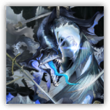

科鲁兹 Cruze
近战 物理；领袖 海嗣
|  |
原征服宣告号船长。吸收了无数剑士的经验和技巧，如今仅凭借着本能在挥舞剑刃。 |
科鲁兹 | Cruze
大型怪兽（海嗣），无阵营
AC 16
先攻 +5（15）
HP 142（15d10+60）
速度 40尺，游泳60尺
| 调整 | 豁免 | ||
|---|---|---|---|
| 力量 | 20 | +5 | +5 |
| 智力 | 7 | -2 | +2 |
| 调整 | 豁免 | ||
|---|---|---|---|
| 敏捷 | 21 | +5 | +5 |
| 感知 | 16 | +3 | +3 |
| 调整 | 豁免 | ||
|---|---|---|---|
| 体质 | 19 | +4 | +8 |
| 魅力 | 16 | +3 | +3 |
抗性 毒素，强酸，心灵
免疫 魅惑，恐慌，力竭，中毒
感官 盲视10尺，黑暗视觉60尺，被动察觉13
语言 伊比利亚语，海嗣语
CR 10（XP 5,900；PB+4）
特质 Traits
水陆两栖 Amphibious。科鲁兹可以在空气和水中呼吸。
游弋抗性 Cruising Resistance。如果科鲁兹移动速度大于0，他对所有伤害拥有抗性，进行的敏捷豁免具有优势。
复苏抗性 Recovery Resisitance。科鲁兹在一次豁免检定中失败时，他可以消耗5枚未使用的生命骰使其成功，然后恢复27（5d10）点生命值。如果科鲁兹在上一轮或本轮遭受过火焰伤害，则恢复量减半。如果这次豁免检定是为对抗会造成火焰伤害的效应而进行的，则科鲁兹不能使用此特质。
武器精通 Weapon Mastery。科鲁兹发动的武器攻击总是具有优势，在失手时对目标造成5点挥砍伤害（已计入攻击项）。
动作 Actions
剑刃狂舞 Blade Dance（充能5~6）。敏捷豁免检定：DC17，源自科鲁兹20尺光环区域内的每名其所选择的生物。失败：42（4d10+20）挥砍伤害，若体型不大于中型则应击倒地。成功：仅受半伤。
多重攻击 Multiattack。科鲁兹使用百般剑刃或毒触鞭笞发动攻击四次攻击。
百般剑刃 Any Swords。近战攻击检定：+10（具有优势），触及10尺。命中：10（1d10+5）点挥砍或穿刺伤害。失手：5点挥砍伤害。
毒触鞭挞 Lashing Maw。近战攻击检定：+10，触及10尺。命中：11（2d10）点毒素伤害，命中则被擒抱且被拉近至5尺内。
施法 Spellcasting。科鲁兹施展以下一道法术，无需材料成分并使用魅力作为施法属性（法术豁免DC15）：
随意：剑刃爆发Sword BurstTCE，伪足猛击Pseudopod Slam*（三环版本）
1/日：水龙卷Waterspout*
*来自第三方拓展的法术，具体来源见法术详述。
附赠动作 Bonus Actions
高速再生 Speedy Recovery。科鲁兹消耗5枚未使用的生命骰，然后恢复27（5d10）点生命值。如果科鲁兹在自己上一回合结束后，曾遭受过火焰伤害，则恢复量减半。
神经侵蚀 Nerve erosion。感知豁免检定：DC15，所有被科鲁兹擒抱的生物。失败：20（3d12）心灵伤害，并被震慑直到其下回合结束。成功：仅受半伤。
反应 Reaction
招架 Parry。触发：科鲁兹将要被一次近战攻击命中。响应：科鲁兹的AC直到本回合结束前获得+4加值。